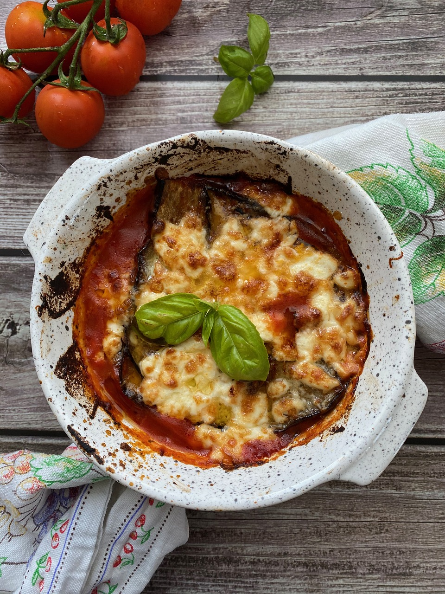

Parmigiana
Zutaten für
| 2 | Aubergine(n) | |
| 2 | Zwiebel(n) | |
| 2 | Knoblauchzehe(n) | |
| 2 | EL | Tomatenmark |
| frisch gemahlener Pfeffer | ||
| 60 | g | Mehl |
| 60 | ml | Olivenöl + 2 El zum Braten |
| 250 | g | Mozzarella |
| 8 | Basilikumblätter | |
| Olivenöl für die Form |
Zubereitung
Die Auberginen waschen, abtropfen lassen, putzen und in 1 cm dicke Scheiben
schneiden. Auf Küchenpapier ausbreiten, rundum salzen und ca. 20 Minuten ziehen lassen.
Zwiebel und Knoblauch abziehen und die Zwiebel sowie die Hälfte der Knoblauchzehen fein würfeln. Das
Olivenöl in einem großen Topf erhitzen, Zwiebel und Knoblauchwürfel zugeben und 3-4 Minuten andünsten.
Tomatenmark zugeben, 1-2 Minuten anschwitzen und mit stückigen Tomaten ablöschen. Die Tomatensoße mit Salz
und Pfeffer abschmecken und 10 Minuten bei mittlerer Hitze köcheln lassen.
In der Zwischenzeit die Auberginenscheiben ausdrücken und trocken tupfen. Mehl in einen Teller oder in eine
Schüssel geben und die Auberginenscheiben darin wenden. Das restliche Olivenöl in einer Pfanne erhitzen und
die Aubergine darin nacheinander auf mittlerer Stufe ca. 3 Minuten von beiden Seiten goldbraun braten. Auf
Küchenpapier legen und abtropfen lassen. So weiter verfahren, bis alle Auberginenscheiben angebraten sind.
Mozzarella abtropfen lassen und in dünne Scheiben schneiden. Den Parmesan fein reiben. Basilikum waschen,
abtropfen lassen, die Blätter abzupfen und in feine Streifen schneiden.
Backofen auf 200 Grad Ober-/ Unterhitze (Umluft: 180 Grad) vorheizen.
Eine eckige Auflaufform (ca. 20 x 30 cm) mit übrigem Knoblauch ausreiben, mit einem Pinsel mit Olivenöl
bestreichen und 3 EL Tomatensoße in der Auflaufform verteilen. Etwa 1/3 der Auberginenscheiben
dachziegelartig in die Auflaufform schichten und 1/4 des Mozzarellas darüber zupfen. Gleichmäßig mit 1 EL
Basilikum sowie 1/4 des Parmesans bestreuen und mit 1/3 Tomatensoße bedecken.
Zwei weitere Schichten wie oben beschrieben darüber schichten, mit dem restlichen Käse abschließen und im
vorgeheizten Ofen 30-35 Minuten goldbraun backen.
Rezept erstellt von
Tizian